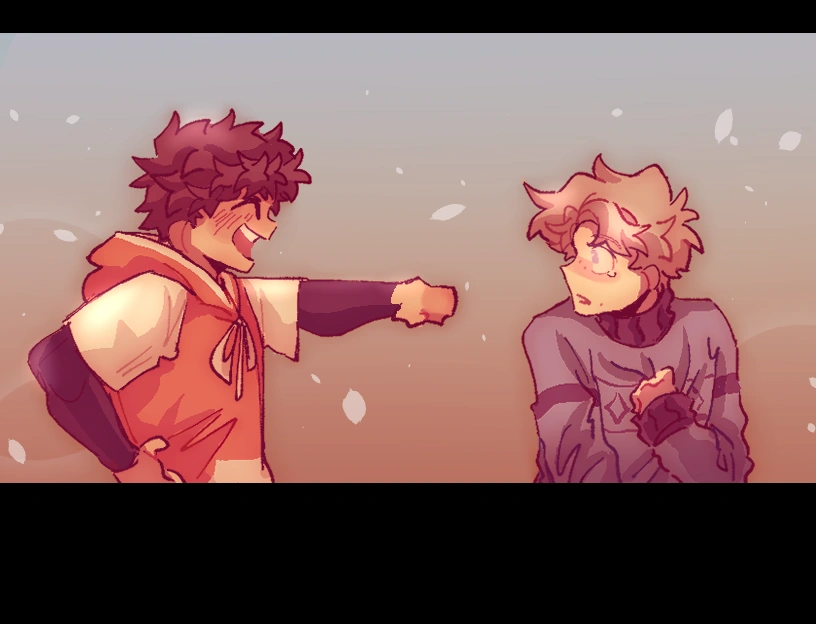

Story
Plot Outline
At an unspecified time when both Winnie and Augustine were children, Winnie relocated to the house next to Augustine's on a chilly winter day. A few days after the move, Winnie's mother spoke with Augustine's mother, noticing Augustine hiding behind her. She suggested he approach Winnie, who had been avoiding interaction since his arrival. Though hesitant, Winnie eventually opened the door. Tearful and upset about leaving his old friends behind, he opened up to Augustine, who encouraged him to stay hopeful and work hard. From that day forward, the two became inseparable.
As years passed, cracks formed in their friendship. During one winter, Winnie fell down the stairs and broke his leg. He later revealed that Augustine wasn't responsible for the fall, but he could have saved him. Augustine had walked away, unaware of how deeply that event wounded Winnie emotionally. Their communication faded for months—Winnie convinced Augustine hated him, while Augustine remained unaware of how much fear and confusion his silence caused.
Later, Winnie revealed he would soon move away after being accepted into the university both boys applied to—a dream only Winnie achieved. His parents' jobs were also closer to the new location. During a tense car ride, an argument broke out between them, only to be interrupted as the pair were suddenly engulfed by a blizzard in the middle of summer. This marks the beginning of the surreal main events of Cold Front.